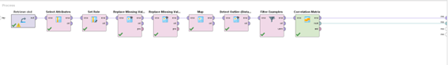
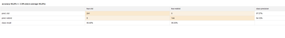

Diagnostico temprano de enfermedad cronica de riñon
Objetivo: El objetivo de este caso de estudio es lograr predecir la probabilidad de que una persona posea una enfermedad cardiaca.
El estudio es realizado en el marco del proceso CRISP-DM:

Comprension del negocio
Enfermedad Renal Crónica (ERC)
La enfermedad renal crónica es una afección médica caracterizada por una disminución progresiva de la función renal a lo largo del tiempo. Puede estar en etapas tempranas, como la insuficiencia renal leve, o en etapas avanzadas, como la insuficiencia renal crónica. La ERC puede ser causada por diversas enfermedades subyacentes, como la diabetes, la hipertensión y enfermedades autoinmunitarias.
Estadísticas Globales
Las estadísticas sobre la ERC varían según la región y el país. Sin embargo, en todo el mundo, la enfermedad renal crónica es un problema de salud pública creciente. Según la Organización Mundial de la Salud (OMS), se estima que alrededor del 10% de la población mundial tiene ERC, y millones de personas mueren cada año debido a complicaciones relacionadas con esta enfermedad.
Impacto Económico y Social
La ERC tiene un impacto económico significativo en los sistemas de atención médica y en la calidad de vida de las personas. Los costos asociados con el tratamiento de la ERC, que puede incluir diálisis o trasplante renal, son sustanciales. Además, la enfermedad puede llevar a una disminución en la productividad laboral y una mayor carga para las familias.
Otros Problemas Relacionados
La ERC también está relacionada con una serie de otros problemas de salud, como enfermedades cardiovasculares, anemia, desequilibrios electrolíticos y trastornos óseos y minerales. La gestión de la ERC implica no solo tratar la disfunción renal, sino también abordar estas complicaciones.
Comprension del negocio
Es un dataset que se compone de 25 atributos
| Número | Variable | Descripción | Categorías |
|---|---|---|---|
| 1 | Age | Edad en años | Numerical (Edad en años) |
| 2 | Blood Pressure | Presión arterial en mm/Hg | Numerical (Presión arterial en mm/Hg) |
| 3 | Specific Gravity | Gravedad específica | Nominal (1.005, 1.010, 1.015, 1.020, 1.025) |
| 4 | Albumin | Albúmina | Nominal (0, 1, 2, 3, 4, 5) |
| 5 | Sugar | Azúcar en orina | Nominal (0, 1, 2, 3, 4, 5) |
| 6 | Red Blood Cells | Glóbulos rojos en sangre | Nominal (Normal, Anormal) |
| 7 | Pus Cell | Células de pus | Nominal (Normal, Anormal) |
| 8 | Pus Cell Clumps | Coágulos de células de pus | Nominal (Presente, No Presente) |
| 9 | Bacteria | Bacterias en orina | Nominal (Presente, No Presente) |
| 10 | Blood Glucose Random | Glucosa en sangre aleatoria | Numerical (bgr en mg/dl) |
| 11 | Blood Urea | Urea en sangre | Numerical (bu en mg/dl) |
| 12 | Serum Creatinine | Creatinina en suero | Numerical (sc en mg/dl) |
| 13 | Sodium | Sodio en suero | Numerical (sod en mEq/L) |
| 14 | Potassium | Potasio en suero | Numerical (pot en mEq/L) |
| 15 | Hemoglobin | Hemoglobina | Numerical (hemo en gms) |
| 16 | Packed Cell Volume | Volumen de células empaquetadas | Numerical (Valor en %) |
| 17 | White Blood Cell Count | Recuento de glóbulos blancos | Numerical (wc en células/cumm) |
| 18 | Red Blood Cell Count | Recuento de glóbulos rojos | Numerical (rc en millones/cmm) |
| 19 | Hypertension | Hipertensión | Nominal (Sí, No) |
| 20 | Diabetes Mellitus | Diabetes Mellitus | Nominal (Sí, No) |
| 21 | Coronary Artery Disease | Enfermedad de las arterias coronarias | Nominal (Sí, No) |
| 22 | Appetite | Apetito | Nominal (Bueno, Pobre) |
| 23 | Pedal Edema | Edema en los pies | Nominal (Sí, No) |
| 24 | Anemia | Anemia | Nominal (Sí, No) |
| 25 | Class | Clase | Nominal (CKD, No CKD) |
- Muchos datos tienen valores con “?” lo cual significa que es un valor faltante. Esto se pueden descartar con el fin de tener un dataset más limpio. Esto no va a afectar los datos puesto que son pocos valores en general
Procesamiento de los datos
Valores faltantes:
| Número | Variable | Descripción | Categorías |
|---|---|---|---|
| 1 | Age | Edad en años | Numerical (Edad en años) |
| 2 | Blood Pressure | Presión arterial en mm/Hg | Numerical (Presión arterial en mm/Hg) |
| 3 | Specific Gravity | Gravedad específica | Nominal (1.005, 1.010, 1.015, 1.020, 1.025) |
| 4 | Albumin | Albúmina | Nominal (0, 1, 2, 3, 4, 5) |
| 5 | Sugar | Azúcar en orina | Nominal (0, 1, 2, 3, 4, 5) |
| 6 | Red Blood Cells | Glóbulos rojos en sangre | Nominal (Normal, Anormal) |
| 7 | Pus Cell | Células de pus | Nominal (Normal, Anormal) |
| 8 | Pus Cell Clumps | Coágulos de células de pus | Nominal (Presente, No Presente) |
| 9 | Bacteria | Bacterias en orina | Nominal (Presente, No Presente) |
| 10 | Blood Glucose Random | Glucosa en sangre aleatoria | Numerical (bgr en mg/dl) |
| 11 | Blood Urea | Urea en sangre | Numerical (bu en mg/dl) |
| 12 | Serum Creatinine | Creatinina en suero | Numerical (sc en mg/dl) |
| 13 | Sodium | Sodio en suero | Numerical (sod en mEq/L) |
| 14 | Potassium | Potasio en suero | Numerical (pot en mEq/L) |
| 15 | Hemoglobin | Hemoglobina | Numerical (hemo en gms) |
| 16 | Packed Cell Volume | Volumen de células empaquetadas | Numerical (Valor en %) |
| 17 | White Blood Cell Count | Recuento de glóbulos blancos | Numerical (wc en células/cumm) |
| 18 | Red Blood Cell Count | Recuento de glóbulos rojos | Numerical (rc en millones/cmm) |
| 19 | Hypertension | Hipertensión | Nominal (Sí, No) |
| 20 | Diabetes Mellitus | Diabetes Mellitus | Nominal (Sí, No) |
| 21 | Coronary Artery Disease | Enfermedad de las arterias coronarias | Nominal (Sí, No) |
| 22 | Appetite | Apetito | Nominal (Bueno, Pobre) |
| 23 | Pedal Edema | Edema en los pies | Nominal (Sí, No) |
| 24 | Anemia | Anemia | Nominal (Sí, No) |
| 25 | Class | Clase | Nominal (CKD, No CKD) |
Se puede ver que el dataset tiene unos cuantos valores faltantes.
Class: tiene 13 valores faltantes pero debido a la letra del info (250 valores ckd) podemos entenderlos como ckd. Por lo tanto Class tiene 0 valores faltantes.
Dos datos para considerar son rbcc y wbcc los cuales tienen más de ¼ de los atributos. Debido a que estos son muy importantes para los problemas renales los missing van a ser remplazados por la media del atributo.
Como consideración para reducir la dimensionalidad de los atributos se va a quitar anemia, rbc pues rbcc abarca ambas. Mismo con hipertensión y presión de sangre. Diabetes y glucosa. Gravedad no se encuentra en la bibliografía.

Tras el primer filtrado se realiza una matriz de correlación y se obtienen los siguientes resultados:
Bu sc –pck – pck rc – rc – sod pot
Como están altamente relacionadas se va a quitar hemo sc y sod
Visualizacion
Tratamiento previo de los datos
- Se seleccionan los atributos que se desean quitar
- Se setea el rol de label
- Se remplazan los valores "wc" y "rbc" por el promedio
- Se reemplaza el "no" de class por "notckd"
- Se filtran los "?"
Modelado
Curvas ROCs:
LDA
El subproceso se realiza para que todos los datos sean numericos
Evaluacion
LR

KNN
NB
LDA
| Modelo | Rendimiento |
|---|---|
| LR | 96.25 +- 3.39 |
| NB | 95.25 +- 4.16 |
| LDA | 95.25 +- 4.16 |
| KNN | 74.50 +- 7.25 |